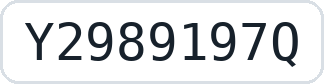

Aviso legal
En cumplimiento del artículo 10 de la Ley 34/2002, de Servicios de la Sociedad de la Información y de Comercio Electrónico (LSSI-CE), se informa de los datos del titular de esta web:
- Titular: Wanderson Badaro
- NIF (NIE):

- Domicilio: Travesía Severo Ochoa · La Pola de Gordón (León)
- Correo electrónico: repostarbaratocyl@gmail.com
Objeto
Repostar Barato CyL es una web informativa que muestra los precios de los carburantes en las gasolineras de Castilla y León y la ubicación de puntos de recarga para vehículos eléctricos.
Origen de los datos
Los precios proceden de los datos abiertos del Ministerio para la Transición Ecológica y el Reto Demográfico, que las propias gasolineras comunican. Los puntos de recarga proceden del Punto de Acceso Nacional de Tráfico y Movilidad de la DGT (licencia CC BY). Esta web no está vinculada ni patrocinada por ninguno de los dos organismos.
Exactitud de la información
Los precios se actualizan varias veces al día, pero pueden cambiar en cualquier momento. El precio que vale es siempre el que marque el surtidor. El titular no se hace responsable de errores en los datos de origen ni de decisiones tomadas a partir de ellos.
Propiedad intelectual
El diseño y los textos propios de esta web pertenecen a su titular. Las imágenes de satélite pertenecen a sus proveedores, indicados en el propio mapa.
Publicidad
Esta web muestra anuncios de Google AdSense para financiarse.